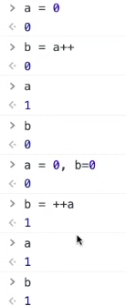
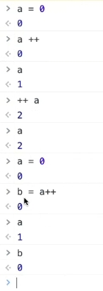

<!DOCTYPE html>
<html lang="en">
<head>
    <meta charset="UTF-8">
    <meta http-equiv="X-UA-Compatible" content="IE=edge">
    <meta name="viewport" content="width=device-width, initial-scale=1.0">
    <title>for迴圈</title>
</head>
<body>

    <!-- 
     -->
    <!-- 3.3for迴圈 -->
    <div id="info"></div>

    <script src="./js/jquery-3.6.0.min.js"></script>
        <script>
            const info = $('#info');
            // 可以用debug來看迴圈是怎麼跑的，停止點設在const info，然後用跳過的方式，不然會跑進JQ
            // 0~1
            for(let i=0; i<10; i++){
                // i<10表示從0開始算，i跑了十次
                // i++是i=i+1的意思
                info.append(`<div>${i}</div>`);
            }

            info.append(`<div>----------------------</div>`);

            // 1~10
            for(let i=0; i<10; i++){
                // i<10表示從0開始算，i跑了十次
                // i++是i=i+1的意思
                info.append(`<div>${i+1}</div>`);
            }

            info.append(`<div>----------------------</div>`);

            // 10~1
            for(let i=10; i>=1; i--){
                // i<10表示從0開始算，i跑了十次
                // i--是i=i-1的意思
                info.append(`<div>${i}</div>`);
            }

            for(let i=0; i<10; i++){
                // i<10表示從0開始算，i跑了十次
                // i++是i=i+1的意思
                info.append(`<div>${10-i}</div>`);
            }

            
            info.append(`<div>----------------------</div>`);

            // 2、4、6、8
            for(let i=0; i<10; i++){
                // i<10表示從0開始算，i跑了十次
                // i++是i=i+1的意思
                info.append(`<div>${ (i+1)*2 }</div>`);
            }
            for(let i=2; i<=20; i+=2){
                // i<10表示從0開始算，i跑了十次
                // i++是i=i+1的意思
                info.append(`<div>${i}</div>`);
            }
            info.append(`<div>----------------------</div>`);
        </script>
</body>
</html>